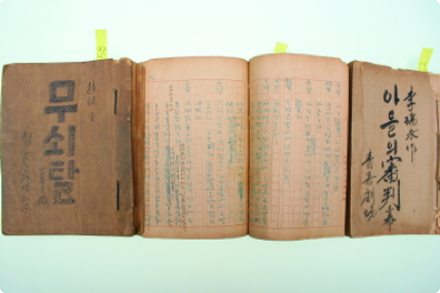
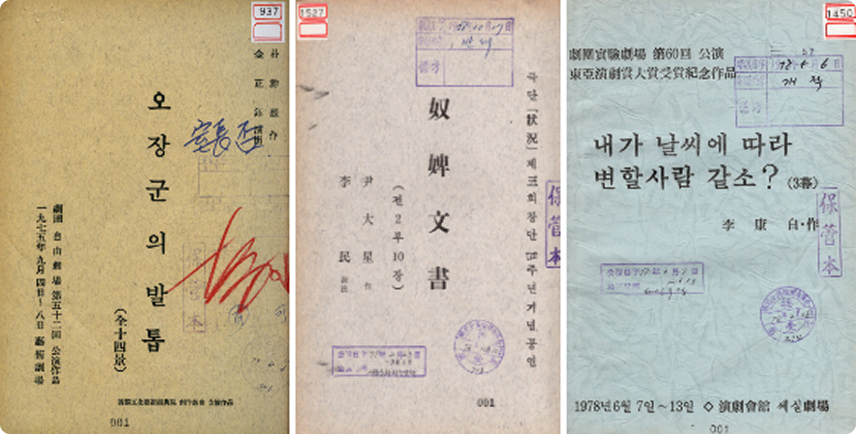

공연대본 컬렉션은 아르코예술기록원이 소장하고 있는 대본 중 자료의 희귀성, 시사점, 주제적인 측면을 고려해 1950년대 전후 공연되었던 근대희곡과1960~90년대 심의대본을 디지털화하여 제공합니다.
근대희곡은 그간 남아있는 대중극 대본이 많지 않아, 대중극의 실체를 밝히는 연구가 활발하지 못했던 한계를 극복할 수 있는 자료이고, 심의대본도 연구의 어려움으로 지적되어 왔던 ‘사라져 버린 텍스트’, '검열의 흔적이 남아 있는 원본’의 부재를 딛고, 통제와 검열의 양상, 공연예술사에 미친 검열의 영향을 밝혀 줄 실증 사료로써 가치가 크다고 할 수 있습니다.

